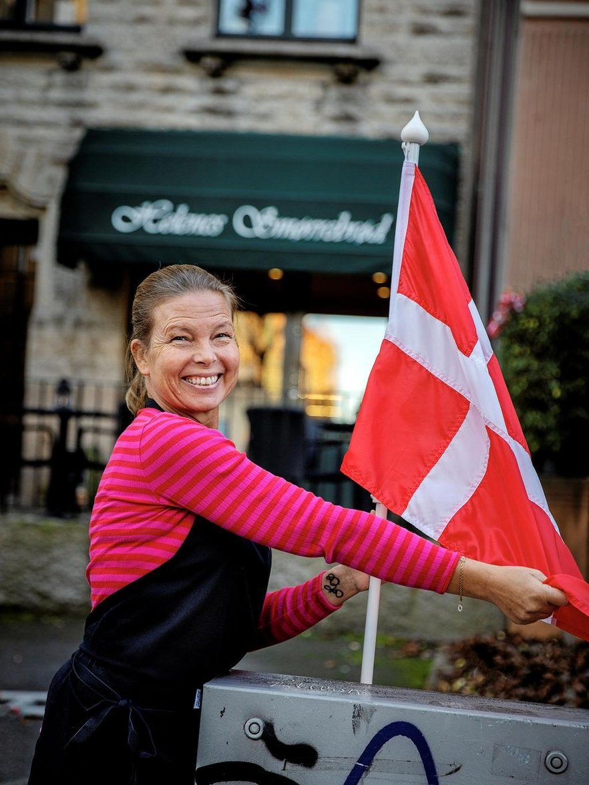
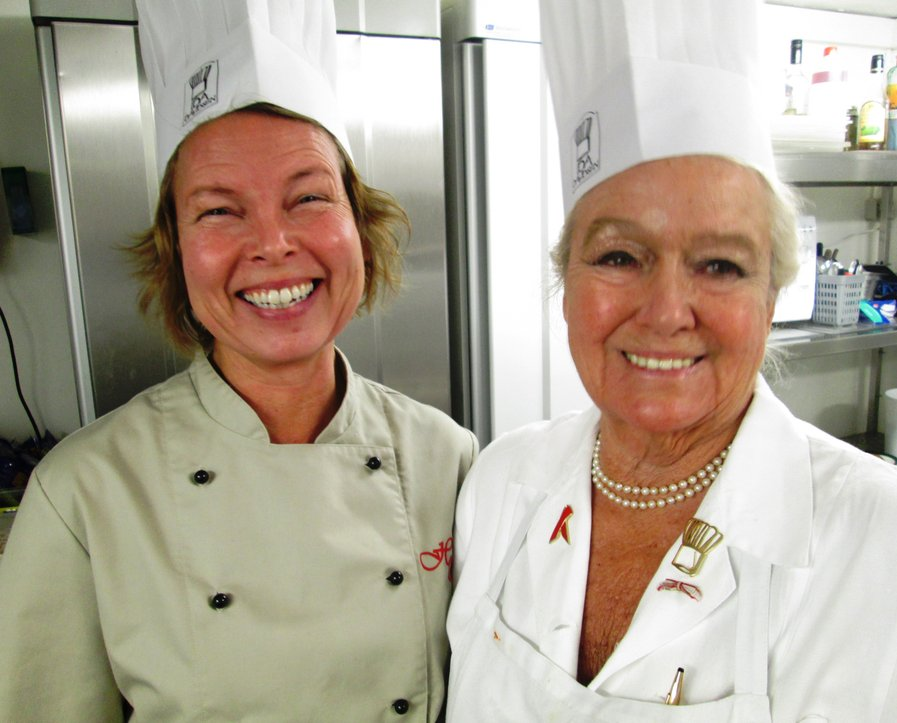

Bornholm möter Göteborg
En bit
Danmark mitt i stan.
Äkta danska smørrebrød, gjorda med omsorg och generöst pålägg. Välkommen in för lunch eller ta med något gott på vägen.
Berzeliigatan 13, Göteborg

DANSK
HYGGE

Från Rønne till Göteborg
En dröm med
smak av hemma.
Helene flyttade från Rønne på Bornholm till Sverige 1988. Drömmen om en egen smørrebrödsbutik följde med, och när flytten gick till Göteborg 2011 kändes det rätt att låta göteborgarna få smaka på en bit Danmark.
Sedan 2014 serveras smørrebrød med danskt rågbröd och generöst med pålägg — precis som Helene själv tycker om dem.
Kom förbi och säg hejUd af huset
Gör mötet
lite godare.
Överraska kunder och kollegor med äkta danska smørrebrød till möten, konferenser och andra tillfällen. Utkörning kan ordnas — ring så berättar Helene mer och ger ett pris för leveransen.
Prata företagsbeställningkærlighed ♥
Mitt emellan Götaplatsen och Scandinavium
Vi ses på
Berzeliigatan.
Ta plats i restaurangen, slå dig ner en stund eller ta med dina favoriter. Här finns åtta sittplatser och kaffe till maten.
Hitta vägenÖppettider
Avvikande tider meddelas på Facebook. Beställningar och bordsbokning görs per telefon under öppettiderna.
Ring 031–20 20 80